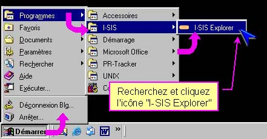
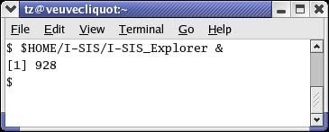
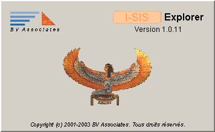
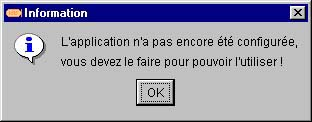
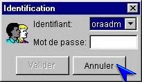
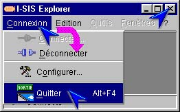

I-SIS Explorer

Guide d'utilisation
|
|
I-SIS Explorer |
|
|
Guide d'utilisation |
||
Le I-SIS Explorer se démarre comme tout autre logiciel Windows ou Linux. Plusieurs I-SIS Explorers peuvent être ouverts simultanément sur un même poste.
Cliquez sur le bouton "Démarrer" de Windows,
Pointez le sous-menu "I-SIS" du menu "Programmes",
Puis cliquez l'icône de démarrage du "I-SIS Explorer",

Ouvrez
un terminal shell, puis lancez le I-SIS Explorer depuis la ligne de commande,
en tapant la commande:
<I-SIS_directory>/I-SIS_Explorer
&
où <I-SIS_directory> correspond au répertoire d'installation de
I-SIS Explorer.

Le logo de I-SIS Explorer s'affiche, avant de s'effacer devant la fenêtre principale,
|
 |
|
Au premier lancement de I-SIS Explorer, un message indiquant que celui-ci doit être configuré s'affiche (cf. «Préparer la première configuration»),

Aux lancements ultérieurs, la fenêtre d'identification permettant de vous authentifier auprès du I-SIS Portail s'affiche (cf. «Sélectionner son identifiant»).

Pour fermer la fenêtre d'identification, cliquez son bouton "Annuler". Le I-SIS Explorer reste ouvert et non connecté, ce qui est nécessaire pour le reconfigurer (cf. «Préparer une reconfiguration»).

Si nécessaire, fermez la fenêtre d'identification (cf. «Fermer la fenêtre d'identification»),
Cliquez "Connexion" sur la barre de menu, puis "Quitter" du menu déroulant (ou cliquez le bouton du coin supérieur droit de I-SIS Explorer),

Si le I-SIS Explorer est connecté au I-SIS Portail, vous en êtes averti par un message. Validez pour confirmer la fermeture.
Copyright © 2003 BV Associates. Tous droits réservés.